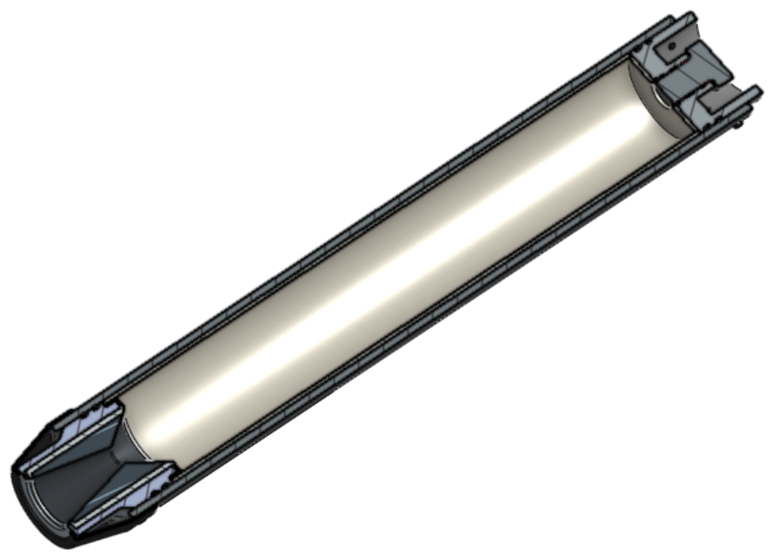
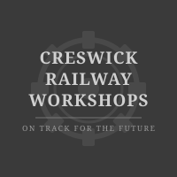
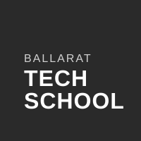

Mission Partner
Anchor a vehicle or campaign — B1M flight, hopper, or named static-fire series.
- Primary logo on vehicle / stand
- Featured site & materials
- Named in news & flight updates
- Workshop + flight-day access
- Direct line to team leads
Beyond Stage Zero
Hardware on the stand. Vehicles in production. First flight window Q4’26–Q1’27.
Why we exist
Stage Zero is the ground. Everything beyond it is what we’re building toward. From the Creswick Goods Shed, seventeen students design, machine, cast propellant, write range software, and fly hardware.
Not a poster club
Failures are logged as carefully as successes — nozzle retention, casing redesign, propellant grade lessons.
Near-term
Sub-scale systems validation. What works on B1M goes on STRAVOX.

Full-scale goal
Fully and rapidly reusable. Airbrake + propulsive vertical landing.
Mission pipeline
Sponsorship funds flight hardware
Published static fires, engines in build, vehicles in production — not a concept deck.
B1M → hopper → full-scale STRAVOX. A clear Australian reusable flight ladder.
Seventeen builders at the Goods Shed, backed by CRWA and Ballarat Tech School.
B1M-01 targets Q4’26–Q1’27. Support lands before first flight, not after.
What sponsorship unlocks
KNSB ingredients, casing stock, nozzle materials, static-fire consumables
Tube, fins, recovery bay, machining stock for B1M and hopper
Flight computers, altimeters, GPS, batteries, parachutes
CASA path, range logistics, Octopus ground hardware, mission control
Metrology, casting fixtures, test-stand instrumentation
Materials, CNC time, composites, electronics, logistics expertise
Anchor a vehicle or campaign — B1M flight, hopper, or named static-fire series.
Sustained cash or in-kind across propulsion, structures, or avionics.
Targeted help — materials, tools, components, or a one-off gift.
Tie your name to Australia’s student-built reusable flight programme.
Logos and credits on real vehicles, stands, and published campaigns.
Seventeen builders learning propulsion, structures, avionics, and ops.
Creswick and Ballarat — aerospace from a Goods Shed, not a CBD tower.
We publish fires, failures, and milestones. Support shows in the public record.
Come to the workshop. Watch a static fire. See the hardware you helped fund.
Seventeen students
Will · Seb · Jet · Columbus · Arnav · Wave · Sage · Abby · Alice · Chelsea · Declan M · Declan S · Lilly · Nia · Oscar · Zafran · Ziad
Institutional partners


Join the programme
Cash, materials, machining time, components, or advice. We’ll reply with where it fits in the flight programme.